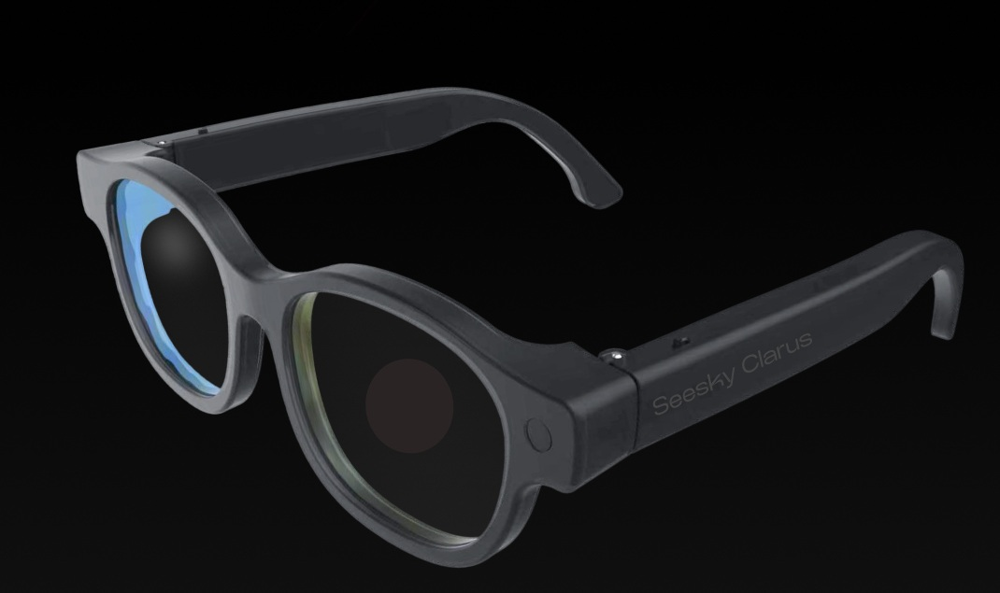
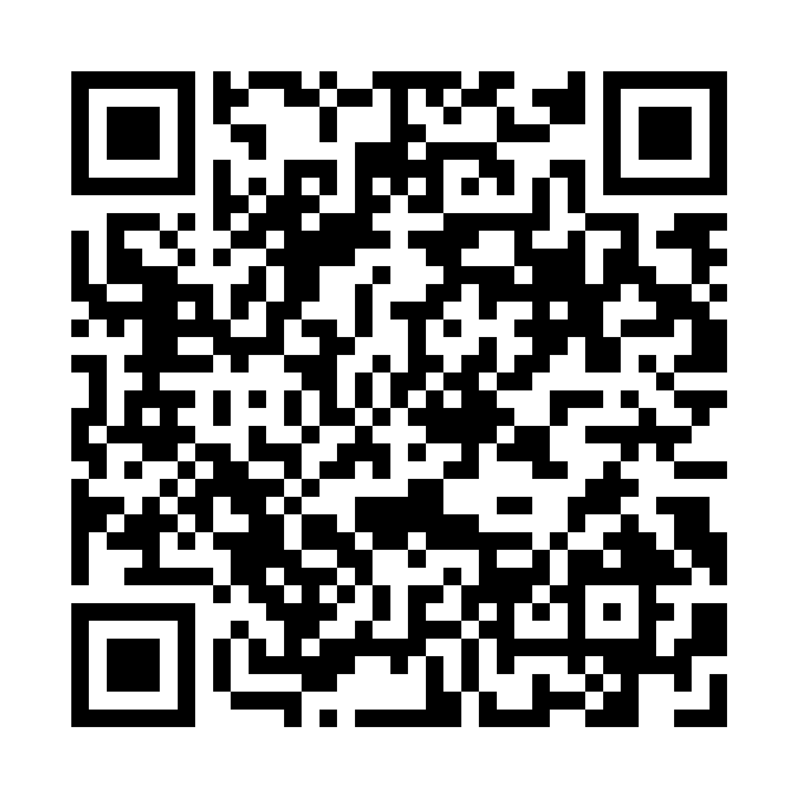

两颗触摸键，完成拍照解题、翻译、拍照保存和专注陪伴。第一次使用，按顺序走一遍，几分钟就能上手。


扫码查看在线说明
https://seesky-ai-glasses.github.io/Manual/
适用于手机 App「Seesky Glasses」8.0.1 及以上 · 版本 2026.10
第一次使用前，请先把眼镜充满电，并在手机上装好配套 App。
用一头是普通 USB 口（USB-A）、一头是 USB-C 的线，接手机充电头充电，5V、500mA 或 1A 均可，约 1 小时充满。充满后，张开镜腿就会自动开机，合上镜腿自动关机。
在 App Store 或 Google Play 搜索「Seesky Glasses」安装。输入邮箱，收到验证码后即可登录，不需要设置密码。
打开手机蓝牙，在 App 首页点「连接 Sky One」，再给眼镜连上 Wi-Fi。连好以后就可以开始用了。
蓝牙让手机认识眼镜，Wi-Fi 用来传照片、取结果。两步都在 App 首页完成。
菜单键和确认键是镜腿上的两个触摸区域（以实物标注为准）。每个页面底部都有一行小字，提示这一页怎么按。
| 页面 | 底部提示 | 怎么按 |
|---|---|---|
| 主菜单 | 菜单切换 确认打开 | 短按菜单键换到下一个功能，短按确认键打开 |
| 拍照前 | 确认拍照 菜单返回 | 看向目标，短按确认键拍照；短按菜单键回主菜单 |
| 结果页 | 确认上滚 菜单下滚 长按确认键下一轮 | 短按确认键上翻、菜单键下翻；长按确认键开始下一轮 |
| 出错时 | 确认重试 菜单返回 | 短按确认键再试一次，短按菜单键回主菜单 |
短按菜单键依次切换下面五个功能。拍照时别挡住右镜片外上角的摄像头。
拍下作业或题目，答案直接显示在眼镜里。在 App 的「AI学习」里可以开启解题模式、挑选或改写提示词，眼镜不连手机也生效。
1 选择 AI Camera → 2 确认 → 3 看向题目，再按确认 → 4 在眼镜里翻看答案
拍一张照片发到手机，出现在 App 首页 Photo 一栏的「最近拍摄的画面」里，点「保存到手机相册」存进手机。App 里只保留最近一张，想留的照片请在拍下一张前先保存。
1 选择 Photo → 2 确认 → 3 看向目标，再按确认 → 4 在 App 里保存
对准文字拍一张，译文显示在眼镜里。在 App 首页 Translate 一栏选原文语言和「翻译成」（中文或英文），点「保存并下发到眼镜」。
1 选择 Translate → 2 确认 → 3 对准文字，再按确认 → 4 翻看译文
在 App 里点「开始 30 分钟 Focus」，眼镜自己运行，只在注意力跑偏时给一句简短提醒。
1 在 App 开始 Focus → 2 眼镜自动运行 → 3 无需任何操作 → 4 30 分钟后自动结束
查看眼镜的蓝牙、Wi-Fi 和电量。
1 选择 Status → 2 确认 → 3 查看 → 4 短按菜单键返回
电量显示在眼镜上，手机 App 里不显示电量。
眼镜的提示以绿色文字显示在右眼视野里。看到下面这些，按建议做就行。
| 看到 | 意思 | 现在怎么做 |
|---|---|---|
| 正在拍照 | 正在拍摄画面 | 保持头部稳定 |
| 正在上传 | 照片正在发出 | 保持在 Wi-Fi 信号范围内 |
| 正在分析 | AI 正在处理 | 稍等，不要连续按键 |
| 确认键恢复中 | 刚按过确认键，眼镜在等你松手 | 手离开按键，准备好后再按一次确认 |
| WiFi 未连接 | 眼镜没连上网 | 在 App 里重新「保存并下发」WiFi；用热点时确认热点开着 |
| 上传失败 | 网络不稳，照片没发出去 | 靠近路由器或手机热点，按确认键重试 |
| 拍照失败 | 这张没拍成 | 按确认键重拍；检查摄像头有没有被挡住 |
除了首页的连接和四个功能栏，「我的」页面还有这些设置。
「我的 → 账号与个人资料 → 语言」里切换中文或 English。眼镜屏幕上的文字和 AI 回答的语言会一起变。
App 首页可以打开无痕模式。打开后眼镜照常使用，但新的照片和 AI 结果不会显示在手机上。
用邮箱验证码登录。照片只存在你的手机相册里；AI 结果和 Focus 记录按账号分开保存。不再使用时可以永久注销账号，相关数据会一并删除。
「我的 → 设备状态」里可以看眼镜的连接情况和眼镜软件版本。
我们会不定期推送新功能和修复。连接眼镜后，有新版本时 App 会弹出「发现新版本」。
大多数问题重启眼镜就能解决：合上镜腿等几秒，再张开即可重启。